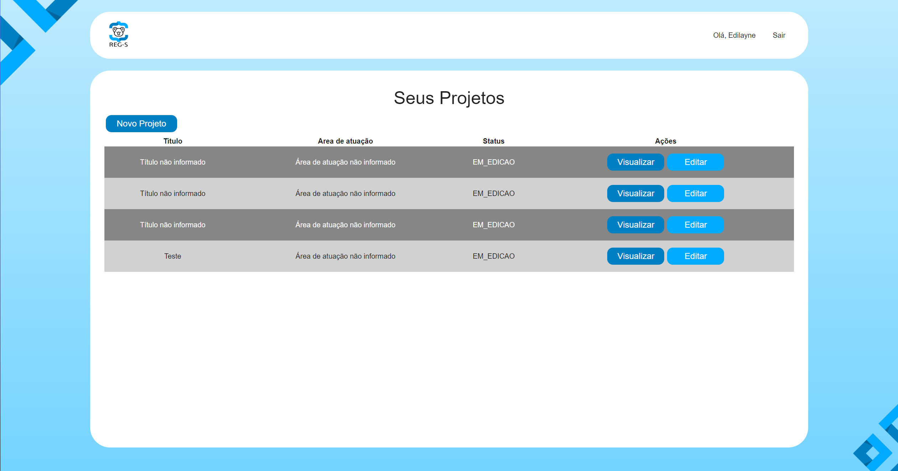
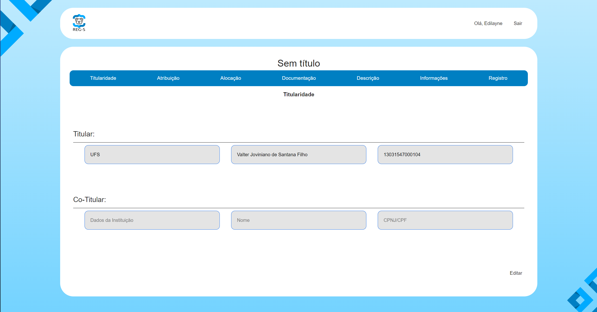

Sobre o Projeto Reg-s
O projeto Reg-s é uma iniciativa voltada para o registro de software, visando facilitar e agilizar o processo de registro para desenvolvedores de software em todo o mundo.
Objetivos
O principal objetivo do projeto Reg-s é fornecer uma plataforma online onde os desenvolvedores possam registrar seus softwares de forma simples e segura, garantindo a proteção legal de suas criações.
Funcionalidades
-




Equipe
O projeto Reg-s é desenvolvido por uma equipe dedicada de profissionais da área de tecnologia, comprometidos em fornecer uma solução eficiente e confiável para registro de software.
Para mais informações, entre em contato conosco através da página de Contato.